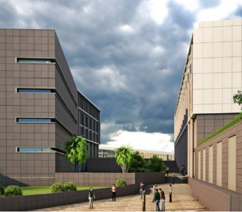
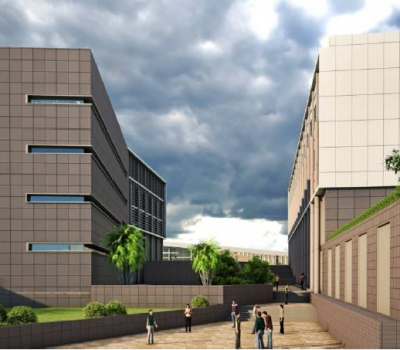

The permanent Campus of IIIT Dharwad is located at Tadasinakoppa near Dharwad. Dharwad is situated on the edge of Western Ghats of Karnataka. It acts as a gateway between the hilly region of the Western Ghats (known as Malenadu in Kannada) and the elevated region of the Deccan Plateau (known as Bayalu Seeme in Kannada).


 
